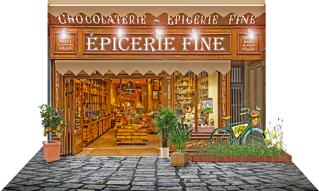

<
>
Présentation
La maison "Les Fins Gourmets" vous propose des produits d’exception. Son épicerie fine regroupe des produits
salés et sucrés tous plus savoureux et gourmands les uns que les autres.
Créée en 2019, la maison "Les Fins Gourmets" est riche d’une tradition historique en épicerie fine. C’est Alban HUSAR, le fondateur, qui décide d’offrir aux consommateurs les produits les plus raffinés et les plus rares, tels que la truffe, le foie gras ou encore le caviar.
Aujourd’hui, notre volonté de proposer à nos clients des mets d’excellence est toujours intacte ! Plus que jamais, la maison "Les Fins Gourmets" s’attache à sélectionner des producteurs engagés dans une démarche qualité. Des partenariats se nouent et des collaborations permettent de mettre au point des recettes exclusives.
Notre mission ? Vous offrir un large choix de produits haut de gamme, respectueux des traditions et de normes de production exigeantes.Que ce soit pour offrir à vos proches, pour déguster entre amis ou pour surprendre vos invités lors d’une réception, nos produits salés répondent à toutes les exigences.
Foie gras, rillettes de la mer, terrines, sablés au parmesan, tapenade provençale d’olive noire, potiron à tartiner… Les idées ne manquent pas en matière d’apéritifs et d’entrées ! L'épicerie fine "Les Fins Gourmets", c’est aussi des huiles, des vinaigres, des épices et des condiments haut de gamme : huile parfumée, vinaigre balsamique, moutarde Autant de produits qui sublimeront vos préparations !
Enfin, les pâtes et le riz font partie de nos incontournables.La maison "Les Fins Gourmets" propose aussi une multitude de produits sucrés, à commencer par une vaste sélection de miels : miel d’acacia, miel de sapin, miel de châtaignier… Douceur et onctuosité définissent ces produits.
Notre boutique en ligne accueille également des gâteaux, des biscuits et autres créations qui vous rappelleront des saveurs d’enfance, telles que la framboise, le chocolat ou le caramel. Il en va de même pour nos confitures et autres pâtes à tartiner qui ravissent les papilles des petits et des grands.
Enfin, le café et le cacao de l'enseigne "Les Fins Gourmets" sont synonymes d’intensité !
Créée en 2019, la maison "Les Fins Gourmets" est riche d’une tradition historique en épicerie fine. C’est Alban HUSAR, le fondateur, qui décide d’offrir aux consommateurs les produits les plus raffinés et les plus rares, tels que la truffe, le foie gras ou encore le caviar.
Aujourd’hui, notre volonté de proposer à nos clients des mets d’excellence est toujours intacte ! Plus que jamais, la maison "Les Fins Gourmets" s’attache à sélectionner des producteurs engagés dans une démarche qualité. Des partenariats se nouent et des collaborations permettent de mettre au point des recettes exclusives.
Notre mission ? Vous offrir un large choix de produits haut de gamme, respectueux des traditions et de normes de production exigeantes.Que ce soit pour offrir à vos proches, pour déguster entre amis ou pour surprendre vos invités lors d’une réception, nos produits salés répondent à toutes les exigences.
Foie gras, rillettes de la mer, terrines, sablés au parmesan, tapenade provençale d’olive noire, potiron à tartiner… Les idées ne manquent pas en matière d’apéritifs et d’entrées ! L'épicerie fine "Les Fins Gourmets", c’est aussi des huiles, des vinaigres, des épices et des condiments haut de gamme : huile parfumée, vinaigre balsamique, moutarde Autant de produits qui sublimeront vos préparations !
Enfin, les pâtes et le riz font partie de nos incontournables.La maison "Les Fins Gourmets" propose aussi une multitude de produits sucrés, à commencer par une vaste sélection de miels : miel d’acacia, miel de sapin, miel de châtaignier… Douceur et onctuosité définissent ces produits.
Notre boutique en ligne accueille également des gâteaux, des biscuits et autres créations qui vous rappelleront des saveurs d’enfance, telles que la framboise, le chocolat ou le caramel. Il en va de même pour nos confitures et autres pâtes à tartiner qui ravissent les papilles des petits et des grands.
Enfin, le café et le cacao de l'enseigne "Les Fins Gourmets" sont synonymes d’intensité !
